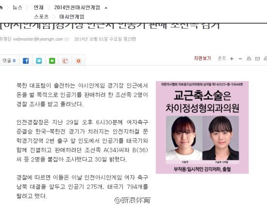

提问：在大陆持有对岸国旗犯法吗？@新浪体育:据韩国媒体报道，29日，警察在仁川亚运会韩国和朝鲜女子足球半决赛开始前，发现有两个朝鲜族的中国人打算销售朝鲜国旗，随后逮捕了他们。警察表示：“持有朝鲜国旗属于违反国家保安法，但是他们纯属以盈利为目的没有别的意向，所以采取了教育释放措施。”详情：韩媒曝两名朝鲜族中国人在韩销售朝鲜国旗被逮捕 
央行看见了么？赶紧叫停吧？ //@星河明远://@明风Andy: 真TMD的应了那句话:狼狈为奸。艹 //@caibinbupt://@hbyido://@光远看经济: 请看政策的效应！ //@今纶:人民的好政府---:该账号因被投诉违反《微博社区公约》的相关规定，现已无法查看。查看帮助 网页链接
 韩媒曝两名朝鲜族中国人在韩销售朝鲜国旗被逮捕
韩媒曝两名朝鲜族中国人在韩销售朝鲜国旗被逮捕